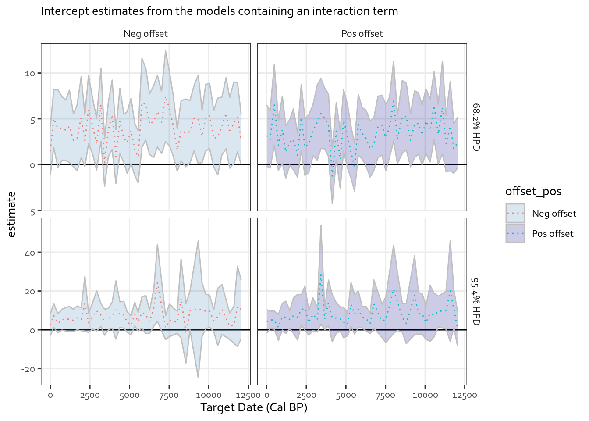

Not enough power for sensitivity: 14C Power and Sensitivity (weeks 4-5?)
14C Power/Sensitivity
Research Design
Project Log
Author
Pete
Published
July 14, 2023
Hello everyone! Last time we left this project, we were on the verge of doing some exploratory modelling to start getting a more precise assessment of patterns we spotted during preliminary visualizations. To recap, we are trying to evaluate how much systematic offsets affect the precision of calibrated radiocarbon date ranges through simulating 10k of those models, with known offsets and checking how they vary. So far we spotted that model accuracy changes through time, as well as based on model precision (more accurate ones tend to get the answers wrong more often). We left off with two ways of approaching the exploratory modelling.
One approach would treat uncertainty about the mean of the calibration curve as one of the model variables.
The other approach would break up the data set based on target dates of the simulated radiocarbon dates, and build logistic models for each time period.
This installment focuses on the outcomes of the second approach. TLDR: if we want to push this any further, we need a lot more simulations than the 10k we’ve got.
The models explored
Before going for our main goal, which is estimating how much offset is dangerous for these kinds of measurements during different time periods, we need to have a good model for describing how difference modelled date ranges relate to different combinations of underpinning factors.
In the current approach, I wanted to build seperate models for different points in time, which left me with two variables to consider: - Magnitude of systematic offset (ranging from -50 to 50 radiocarbon years - which are in reality a unit not of time, but of radiocarbon concentration) - Measurement precision (Between 8 and 32 radiocarbon years - less means more precise).
With these two variables four models were possible: 1. Offset only, ignoring any information from measurement precision 2. Precision only, ignoring offset magnitude 3. Both offset and precision 4. Offset, precision, and their interaction.
While I was confident a priori that the second model was wrong (and I think you’ll agree with me here), it was unclear how models 3 and 4 would compare, or for that matter whether model 1 might not be better on the grounds of parsimony (yes, measurement precision did seem to matter, but maybe not enough to justify it in model inclusion).
I did spend some time two or three years ago chasing my own tail on that one time and time again. This time I decided to go for a simpler solution: I just applied all four models across the board, retaining the “dubious” model 2, as a baseline of bad model choice.
How the modelling got done
This plan involved a lot of models. To be specific four general model designs times however many bins times two to account for positive and negative offsets (after all, we cannot know if their impact on the data is symmetric in all cases and hence, I was reluctant to just use absolute values).
I did the guts of the modelling with the purr and broom method from R4DS: compressed the binned data using nest() and then applied the purpose built model functions to the relevant data. Hence the whole modelling process was over in a matter of maybe a half-hour (at least after I’ve cleared off the cobwebs on how the thing worked in the first place :stuck_out_tongue:).
Code
### Set-up for fifty binssingles_data_url <-"https://raw.githubusercontent.com/pete-jacobsson/14C-power-sensitivity/main/simulation_results/singles_011_results.csv"single_cals <-read_csv(url(singles_data_url))###Seperate pos from neg offsets and group things by cal curve single_cals_modelled <- single_cals %>%mutate (offset_pos =if_else(offset_magnitude >0, TRUE, FALSE),offset_magnitude =if_else(offset_pos, offset_magnitude, offset_magnitude *-1),# Changing negs on offset magnitude to have a consistent direction at downstream visualization.binned_targets =ntile(target_year, 50) ) %>%select(-target_year)### ntile() wouldn't return the relevant target years, so it needs to be done as its own thing.single_cals_modelled <- single_cals %>%mutate(binned_targets =ntile(target_year, 50)) %>%group_by(binned_targets) %>%summarize( #Easy way to get years for the indiv bins, without too muchj headachtarget_year =min(target_year) ) %>%inner_join(single_cals_modelled) %>%#Join the binned DF back in. No, I don't like this either!group_by(offset_pos, target_year) %>%nest()
Code
### Build the model functionsoffset_only_acc68 <-function(singles_data) {glm(accuracy_68 ~ offset_magnitude, data = singles_data, family = binomial)}sigma_only_acc68 <-function(singles_data) {glm(accuracy_68 ~ measurement_error, data = singles_data, family = binomial)}offset_sigma_acc68 <-function(singles_data) {glm(accuracy_68 ~ measurement_error + offset_magnitude, data = singles_data, family = binomial)}offset_sigma_interact_acc68 <-function(singles_data) {glm(accuracy_68 ~ measurement_error + offset_magnitude + measurement_error * offset_magnitude, data = singles_data, family = binomial)}offset_only_acc95 <-function(singles_data) {glm(accuracy_95 ~ offset_magnitude, data = singles_data, family = binomial)}sigma_only_acc95 <-function(singles_data) {glm(accuracy_95 ~ measurement_error, data = singles_data, family = binomial)}offset_sigma_acc95 <-function(singles_data) {glm(accuracy_95 ~ measurement_error + offset_magnitude, data = singles_data, family = binomial)}offset_sigma_interact_acc95 <-function(singles_data) {glm(accuracy_95 ~ measurement_error + offset_magnitude + measurement_error * offset_magnitude, data = singles_data, family = binomial)}## Note to future self: some smart pivoting earlier on could have simplified this by half :)
### Now get the numbers out of the models - aka the actual hard bit XPmodel_names <-colnames(single_cals_modelled)[4:11] ##These will tell us what results go with what modelsingle_cals_log_results <-data.frame()single_cals_log_diagnostics <-data.frame()for (model in model_names) {## This will get a little experimental - we are trying to create a big old table!## First, we thin down the DF to the model of interest temp_results <- single_cals_modelled %>%select(1, 2, all_of(model)) %>%#All of used to address deprecationrename(glm_list =3) %>%#This rename allows map to work correctlymutate(logistic_results =map(glm_list, tidy), # Do the map and also take note of which modelmodel = model ) %>%select(-glm_list) %>%# Gets rid of the actual models (necessary for saving as csv)unnest(logistic_results)# Unnests results temp_diagnostics <- single_cals_modelled %>%## Similar to aboveselect(1, 2, all_of(model)) %>%rename(glm_list =3) %>%mutate(logistic_diagnostics =map(glm_list, glance),model = model ) %>%select(-glm_list) %>%unnest(logistic_diagnostics) single_cals_log_results <-rbind(single_cals_log_results, temp_results) single_cals_log_diagnostics <-rbind(single_cals_log_diagnostics, temp_diagnostics)}
Model fit quality
The first thing I did after getting the models run was to have a look at the quality parameters, the AIC and BIC estimates. If I were lucky, these would help me choose the best model for the job fast. As always, the reality was not as pleasant however, but at least we got one interesting observation.
When I too a look at the AIC values for the models built for different points in time, the first thing I noticed was the sigma_only model doing worse of all our models across the board (with AIC less is better). This was very, very reassuring - at least one expectation got fulfilled. What was a bit more challenging was that there was no clear winner model.
Looking at the 95.4% HPD ranges we have a similar story, but with a few twists. First of all, the AICs are lower than for the 68.2% HPD ranges. This makes sense: in the 68.2% case, we expect a lot more determinations to be off-target because of stochastic nature of measurement. This inbtroduces way more noise, and thus the models have a harder time estimating. In the 95.4% case, the effects of other variables should be more decisive.
But taking one look at the graphs, it is clear that the real interesting bit is elsewhere. Model quality is time-dependent - the further back you go, the better the models are at explaining variation in the data. As the big difference in calibration curve structure is that of curve precision, we can expect that to have some impact on model explanatory power - perhaps by providing just a little less precise calibrations, thus further reducing stochastic effects of measurement uncertainty.
Model results: hints at the models, but not enough power.
While the model quality parameters provided some interesting insights, they did not bring us closer to our goal of choosing a model that would be good for predicting whether radiocarbon determinations subject to certain magnitudes of systematic offset will produce accurate calibrated date ranges. So the other approach was to look at what the actual model results told us. Now, one things that was clear right off the bat was that the “sigma_only” models wouldn’t cut it: they did not perform well for the 68.2% HPD ranges, and also failed to take offset magnitude into the account (the thing we want to be predicting). Second, the offset only models also wouldn’t do, because we know from preliminary visualizations that measurement precision does have an impact on model accuracy and the point is to quantify how much of an impact and under what conditions (not to mention, in practice, measurement precision might be the only thing that the lab teams might have some control over).
This leaves to models to choose from. The one with the interaction between measurement precision and offset magnitude, and the one without the interaction term. Both have comparable AIC and BIC, so it will be the model parameters that make the difference between the two. So lets visualize those:
Code
single_cals_log_results %>%filter(str_detect(model, "offset_sigma") &!str_detect(term, "Intercept") & offset_pos) %>%filter(!(target_year %in%c(7019, 7751, 9076, 11091) &str_detect(model, "95"))) %>%## This removes extreme values of the 95% model in the visualizationsmutate(hpd_area =if_else(str_detect(model, "68"), "68.2% HPD", "95.4% HPD"),model =str_remove(model, "_acc68|_acc95") ) %>%ggplot(aes(x = target_year, y = estimate)) +geom_ribbon(aes(ymin = estimate - std.error *2, ymax = estimate + std.error *2,fill = term), alpha =0.2, color ="grey75") +geom_line(aes(color = term), linetype ="dotted") +facet_grid(cols =vars(model), rows =vars(hpd_area), scales ="free") +ylim(c(-2, 2)) +theme_bw() +theme(panel.grid.minor =element_blank(),strip.background =element_rect(color="black", fill="white" ),text =element_text(family ="Corbel") ) +scale_fill_manual(name ="Parameter", values =c("steelblue", "grey50", "darkblue")) +scale_color_discrete(name ="Parameter") +labs(subtitle ="Estimates for the models without and with an interaction term",x ="Target year (cal BP)",caption ="Please note: visualization only contains model with positive offsets" )
There are a few things going on here. The first is that the uncertainty around the estimates for the 95% HPD areas is much greater than the uncertainties for the models for the 68% HPD areas. This is as expected: the 95.4% HPD areas have a much higher ratio of things being “on target” and hence the logistic regression has far fewer “failures” to work with - and thus it is harder to get good precision.
The second item of interest is that the model without the interaction term produces more precise estimates and that the interaction term is small and very close to zero. Without any other information, this could lead us to choose the non-interaction model as providing better predictions.
However, there is a third item to consider: the sign on the error parameters under the two models. In the non-interaction models the sign tends to be positive, implying that measurements with greater measurement error estimates (i.e. the less precise ones) give us more accurate results. Point. However, this is not true - if we have a situation where there is no systematic offset from the mean of the calibration curve, then a measurement with a precision better than that of the calibration curve will provide the accurate result almost all of the time. Precision only becomes detrimental with offsets and hence the interaction term becomes important for producing a realistic model of the physical situation we are dealing with.
Having said that both models still miss one point from the EDA: they do not show any meaningful change through time. When I first saw that, I though, hey, it might just be the case that the difference lies in the baseline accuracy - that is, in the intercept parameter. Alas, I was disappointed:
Code
single_cals_log_results %>%filter(str_detect(model, "interact") &str_detect(term, "Intercept")) %>%filter(!(target_year %in%c(7019, 7751, 9076, 11091) &str_detect(model, "95"))) %>%## This removes extreme values of the 95% model in the visualizationsmutate(offset_pos =if_else(offset_pos, "Pos offset", "Neg offset"),model =if_else(str_detect(model, "68"), "68.2% HPD", "95.4% HPD") ) %>%ggplot(aes(x = target_year, y = estimate)) +geom_hline(yintercept =0) +geom_ribbon(aes(ymin = estimate - std.error *2, ymax = estimate + std.error *2,fill = offset_pos), alpha =0.2, color ="grey75") +geom_line(aes(color = offset_pos), linetype ="dotted") +facet_grid(cols =vars(offset_pos), rows =vars(model), scales ="free") +theme_bw() +theme(panel.grid.minor =element_blank(),strip.background =element_rect(color="black", fill="white" ),text =element_text(family ="Corbel") ) +scale_fill_manual(values =c("steelblue", "darkblue")) +labs(subtitle ="Intercept estimates from the models containing an interaction term",x ="Target Date (Cal BP)" )

While the estimates did bounce up and down a bit, had any pattern been there, it was lost in the uncertainties. I lacked the power to detect the increase in accuracy through time at this resolution. So I went off and changed the bins.
Try again: bigger bins
Bigger bins mean more simulations per block of time, mean more power to determine whats happening in the models (at the cost of chronological resolution). With the code already written, doing the change was simple enough.
Code
###Change to 10 binssingle_cals_modelled_bin10 <- single_cals %>%mutate (offset_pos =if_else(offset_magnitude >0, TRUE, FALSE),offset_magnitude =if_else(offset_pos, offset_magnitude, offset_magnitude *-1),# Changing negs on offset magnitude to have a consistent direction at downstream visualization.binned_targets =ntile(target_year, 10) ) %>%select(-target_year)### ntile() wouldn't return the relevant target years, so it needs to be done as its own thing.single_cals_modelled_bin10 <- single_cals %>%mutate(binned_targets =ntile(target_year, 10)) %>%group_by(binned_targets) %>%summarize( #Easy way to get years for the indiv bins, without too muchj headachtarget_year =min(target_year) ) %>%inner_join(single_cals_modelled_bin10) %>%#Join the binned DF back in. No, I don't like this either!group_by(offset_pos, target_year) %>%nest()
### Extract the parametersmodel_names_bin10 <-colnames(single_cals_modelled_bin10)[4:11] ##These will tell us what results go with what modelsingle_cals_log_results_bin10 <-data.frame()single_cals_log_diagnostics_bin10 <-data.frame()for (model in model_names) {## This will get a little experimental - we are trying to create a big old table!## First, we thin down the DF to the model of interest temp_results <- single_cals_modelled_bin10 %>%select(1, 2, all_of(model)) %>%#All of used to address deprecationrename(glm_list =3) %>%#This rename allows map to work correctlymutate(logistic_results =map(glm_list, tidy), # Do the map and also take note of which modelmodel = model ) %>%select(-glm_list) %>%# Gets rid of the actual models (necessary for saving as csv)unnest(logistic_results)# Unnests results temp_diagnostics <- single_cals_modelled_bin10 %>%## Similar to aboveselect(1, 2, all_of(model)) %>%rename(glm_list =3) %>%mutate(logistic_diagnostics =map(glm_list, glance),model = model ) %>%select(-glm_list) %>%unnest(logistic_diagnostics) single_cals_log_results_bin10 <-rbind(single_cals_log_results_bin10, temp_results) single_cals_log_diagnostics_bin10 <-rbind(single_cals_log_diagnostics_bin10, temp_diagnostics)}
The bigger bins provide a little bit more clarity on what we’re looking at. As far as the 68.2% HPD areas are concerned, we can see a trend towards higher intercept estimates. This suggests that we may be beginning to see the effects of the temporal trend in the data. However, this is only possible after we’ve sacrificed a lot of temporal resolution. In other words, to gain temporal resolution and evaluate the intercept, we would need way more simulations.
Before we get there, lets first check our other approach: using the curve uncertainty as means of defining time-dependent factors. Which I shall do in the next installment.